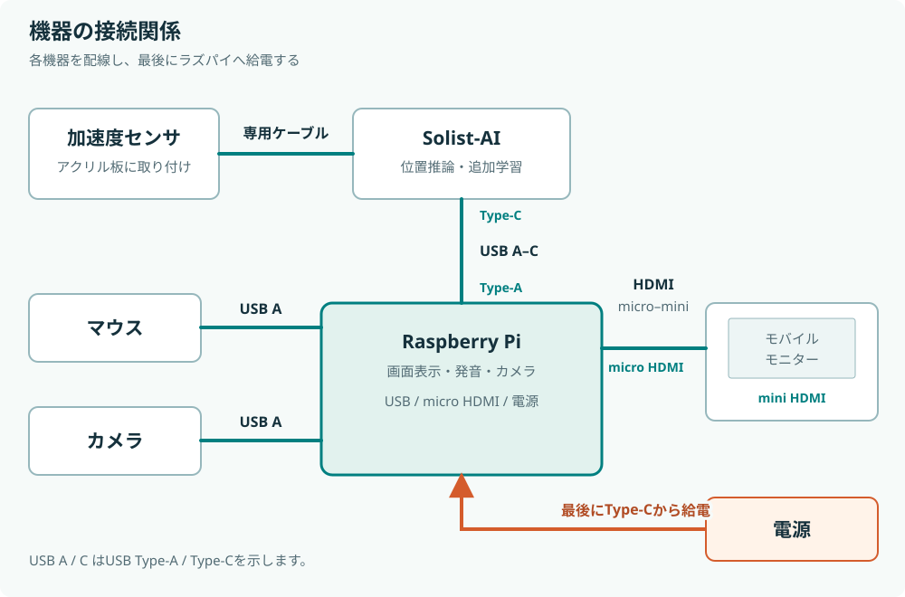

展示セッティングと演奏シンプル版
01 / SETTING装置を設置する
初期設定済みのラズパイを使う展示担当者向けのガイドです。板・フレーム・ダンパーバー・基板・ラズパイ・モニター・マウス・スピーカー・カメラ・接続ケーブルを用意します。標準のマレットはTPUマレットです。
① アクリル板を取り付ける
ボルト4本でブラケットに固定します。
固定位置が分かる全体写真と接写。
② ダンパーバーを設置する
上面がアクリル板と水平になるよう双方の角度を調節します。板がバーに軽く押し付けられる状態が正常です。
角度と接触状態が見える側面写真。
③ カメラを取り付ける
板全体が視野に収まるよう角度を調節します。
取り付け位置と角度が分かる写真。
④ マレットを用意する
TPUと糸巻の2種類があります。通常はTPUマレットを使います。
左にTPU、右に糸巻を並べた比較写真。
板の端・固定具・センサを叩かないでください。がたつきやひびがある場合は使用を止めます。配線は電源を入れる前に行います。
02 / CONNECTION配線して電源を入れる

| 順序 | 接続 | ケーブル・端子 |
|---|---|---|
| 1 | ラズパイ ⇔ Solist-AI | USB A-C（ラズパイ側A / 基板側C） |
| 2 | Solist-AI ⇔ 加速度センサ | 専用ケーブル |
| 3 | ラズパイ ⇔ マウス・カメラ | USB Type-A端子へそれぞれ接続 |
| 4 | ラズパイ ⇔ モバイルモニター | HDMI micro-mini（ラズパイ側micro） |
| 5 | 電源 → ラズパイ | 最後に電源用Type-Cから入力 |
モニター・スピーカーも電源と音声接続を確認し、スピーカーは小音量にします。USB A-Cはデータ通信対応品を使用します。
デモ機のログイン情報 ユーザー名：solistai ／ パスワード：solistai
通常の展示ではPC・ネットワーク接続は不要です。
03 / START & PLAY起動して演奏する
- 電源投入後、ラズパイの自動ログインと「演奏」画面の全画面表示を待ちます。
- 右上が緑の「センサ接続中」になったら、画面を一度タッチ／クリックします。
- 標準のTPUマレットで板の中心付近を軽く1打。音とエリアの反応を確認します。
- 12エリアを順に試し、音量を調整して演奏します。
音色・音量
画面下部で音色と音量を選びます。音量は小さな値から上げます。
自由演奏
「演奏補助」で「自由演奏」を選択。画面の4×3グリッドに対応する場所を叩きます。
ログイン画面が出た場合：ユーザー名 solistai ／ パスワード solistai。
04 / SONG & CAMERA曲とカメラを使う
曲を選んで練習する
- 1音色を選び、②音量で聴きやすい大きさにします。
- 3演奏補助で曲を選びます。曲を選ぶとエリアの音の割り当てが変わります。
- 7手本演奏で曲を聴きます。もう一度押すと停止します。
- 6教示スタートで案内に合わせて叩きます。⑤曲の速さでゆっくりにもできます。
- 8最初からで先頭へ戻ります。④音の長さは響き方の調整に使います。
カメラ映像を表示する（任意）
- ①カメラを選び、②「カメラ開始」を押します。
- 枠が板と合わない場合は③「8点フィット」。四隅を左上→右上→右下→左下の順にクリックします。
- 続いて左上段境界→右上段境界→左下段境界→右下段境界を指定し、枠を合わせます。
- ⑤「停止」で映像を止めると定型グリッドへ戻ります。カメラなしでも演奏できます。
8点フィットの詳細はフル版のカメラ設定へ。
05 / FINISH終了・片付け
- 手本演奏などを止め、上部の「管理」を開きます。
- ③「ラズパイの電源を切る」を3秒間長押しします。
- 終了案内に従い、OS終了とアクセスLEDの点滅停止を確認してから電源を外します。
- 周辺機器の電源を切り、ケーブルと板・センサを保護して片付けます。
終了前に電源ケーブルを抜かないでください。保存データが破損する原因になります。
演奏できないときの確認
| 症状 | 最初に確認すること |
|---|---|
| 画面が出ない | ラズパイの給電、モニターの電源・HDMI入力を確認。 |
| センサ未接続 | 基板の給電、USB A-Cケーブルと両端の接続を確認。 |
| 音が出ない | 画面を一度操作。音量、スピーカーの電源・接続、OS音声出力を確認。 |
| 違う場所が反応する | 板の向き、ダンパーバーとの接触、標準TPUマレットを確認。改善しなければ担当者へ。 |
| カメラが映らない | USB接続、選択カメラ、「カメラ開始」を確認。 |
認識精度の調整が必要な場合は、フル版の現場キャリブレーションを担当者が確認します。初期セットアップ・デバッグ・データ採取・再学習はフル版マニュアルを参照してください。
画面画像：Windows / Chrome上の実装。演奏画面は疑似基板、カメラ未接続の表示例です。実機の画面サイズ・接続状態により表示は変わります。外観写真は撮影後に差し替えます。